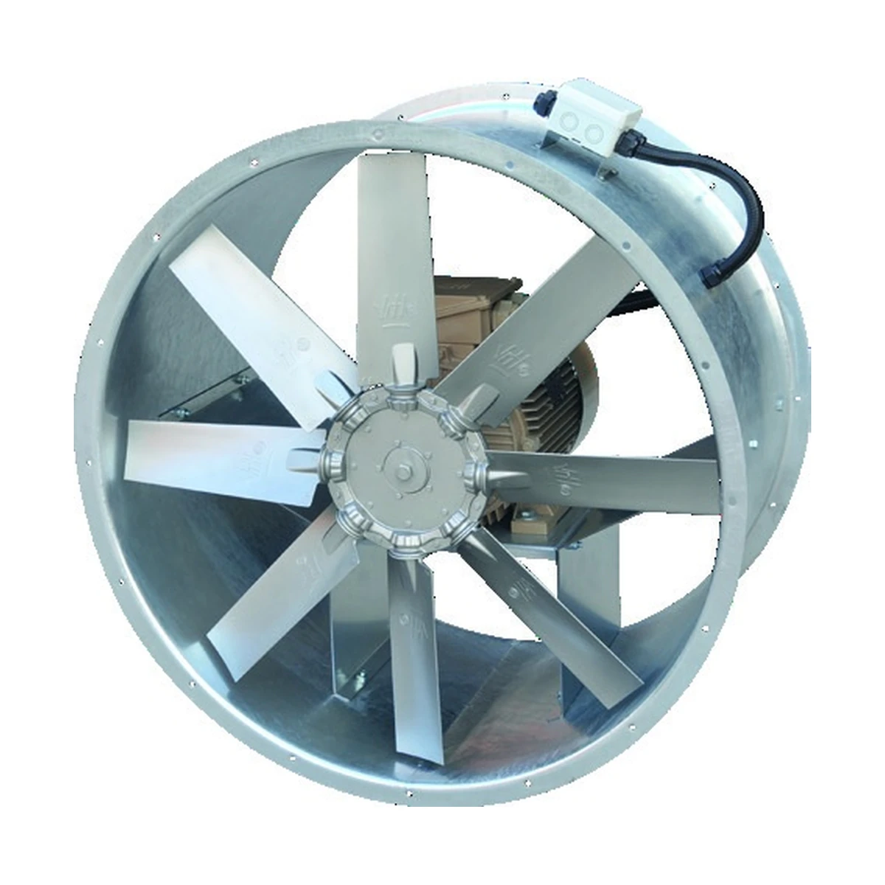
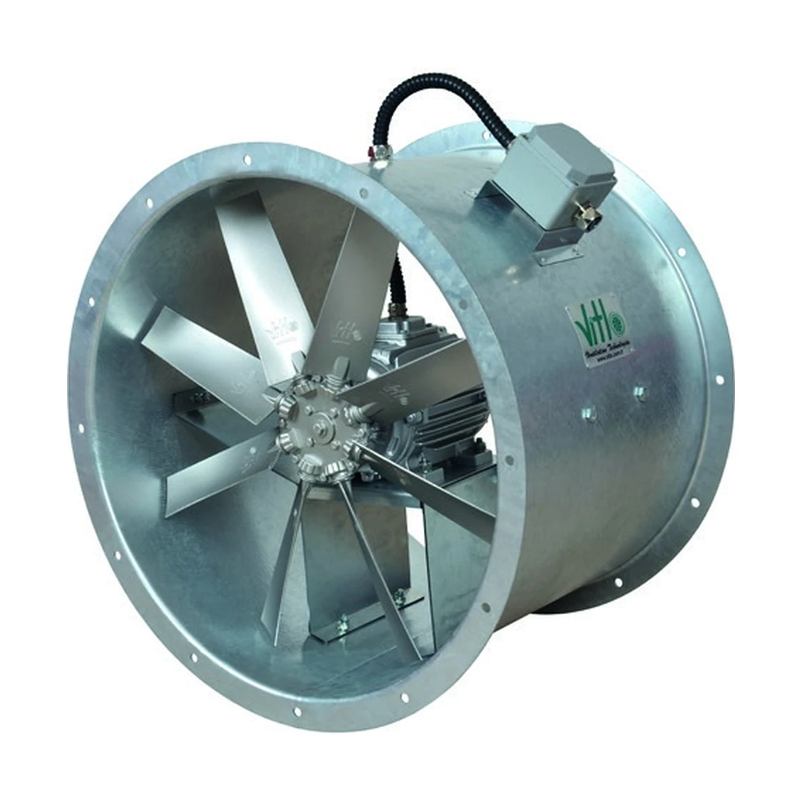
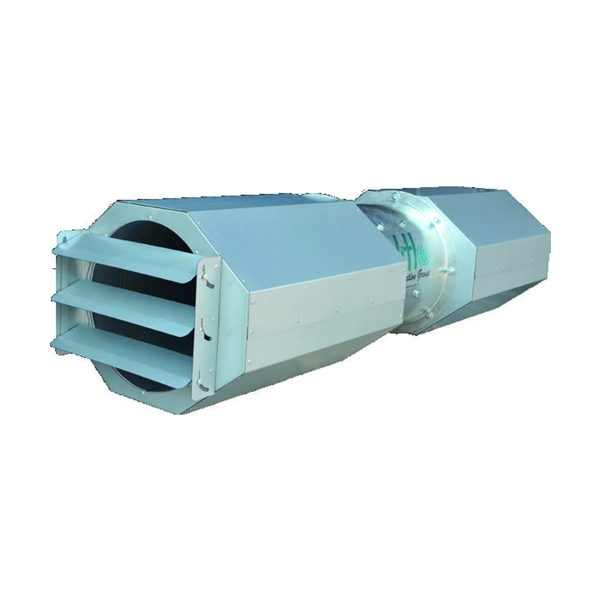
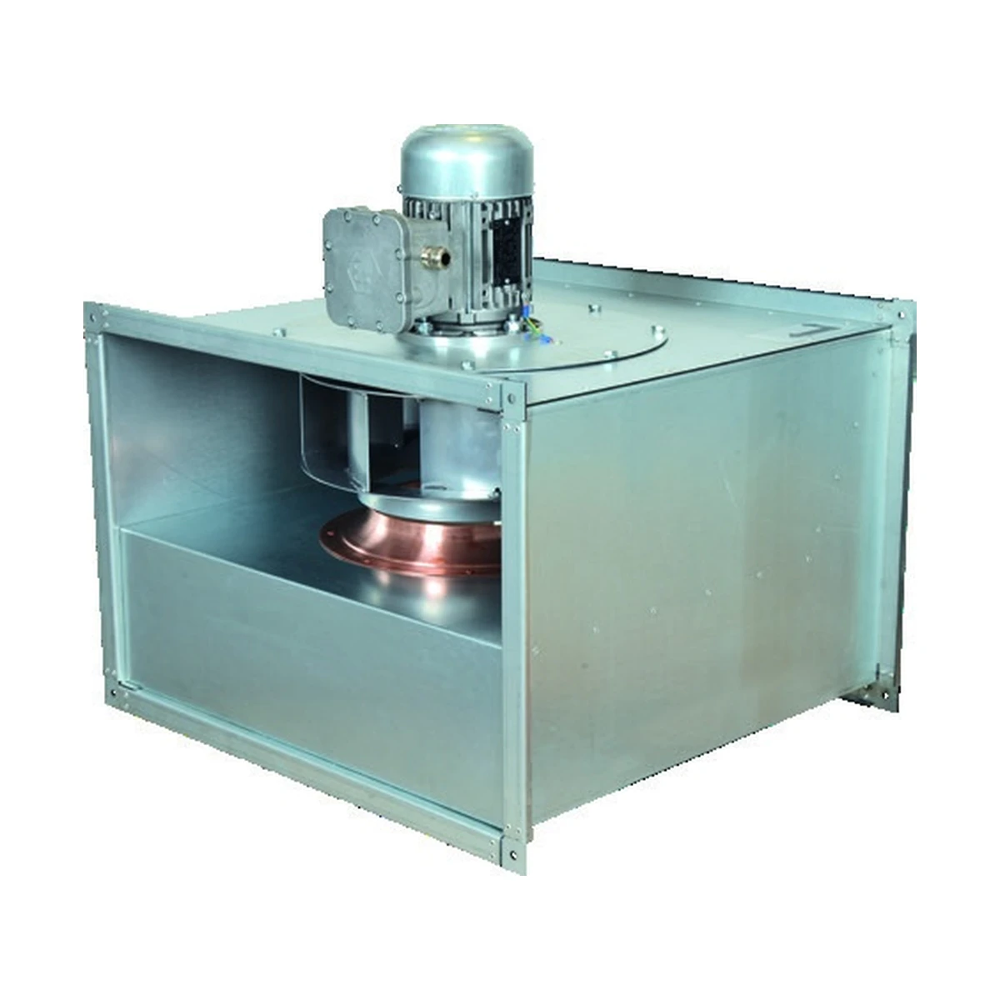
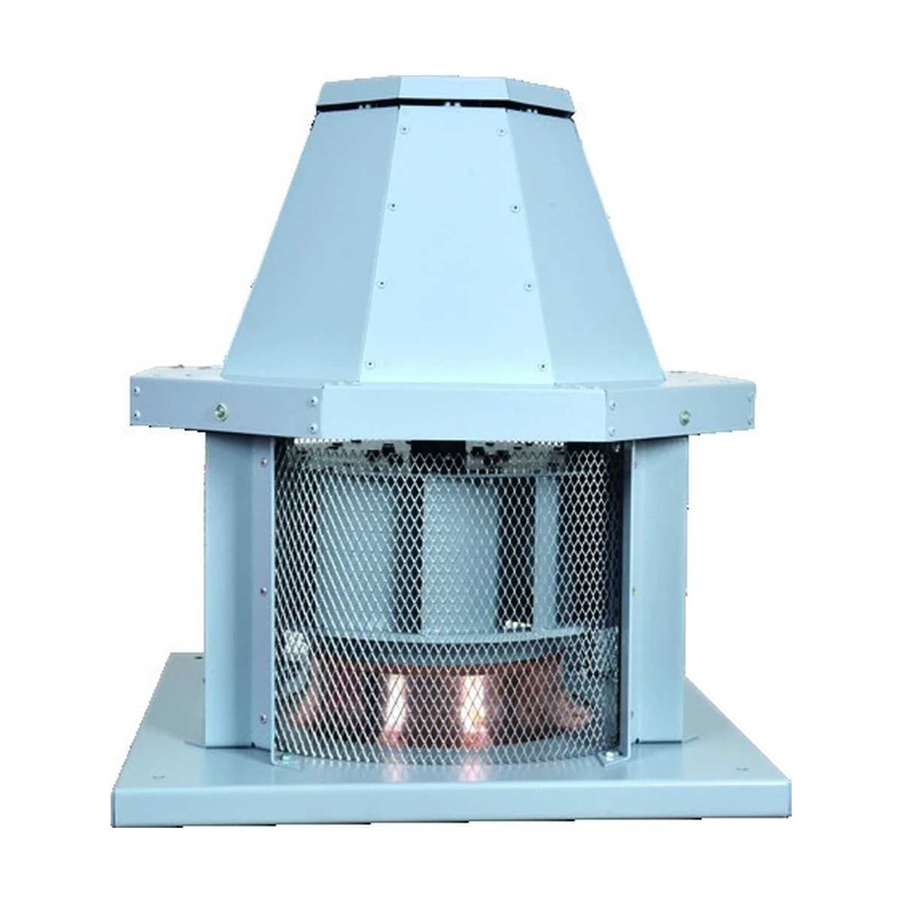
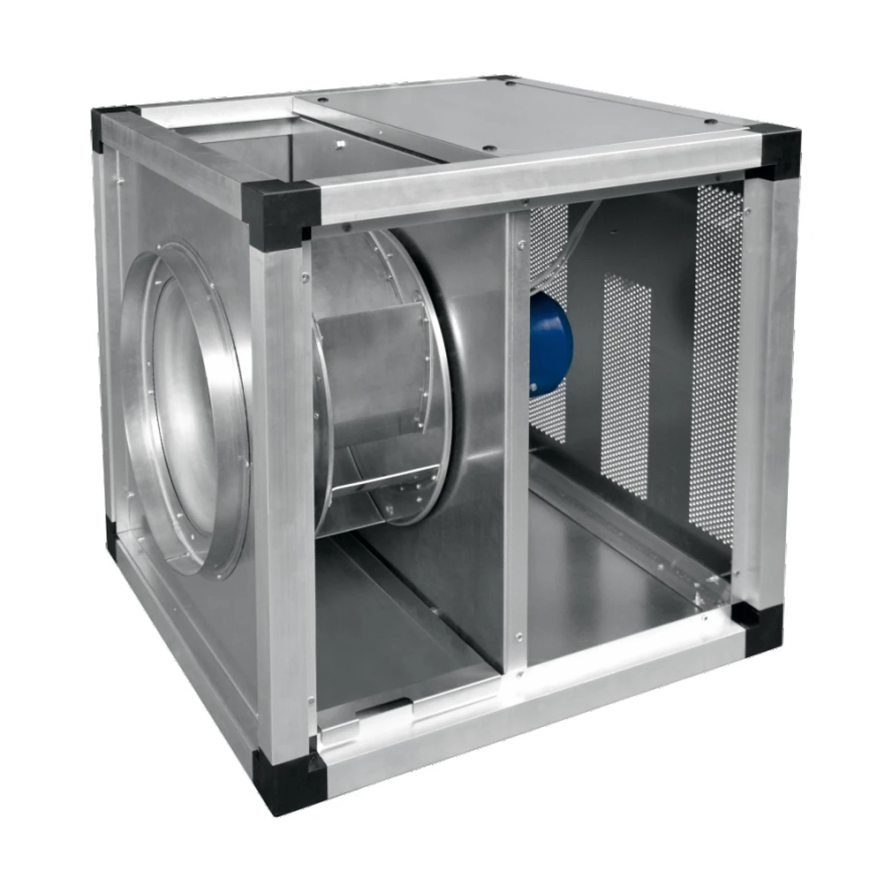
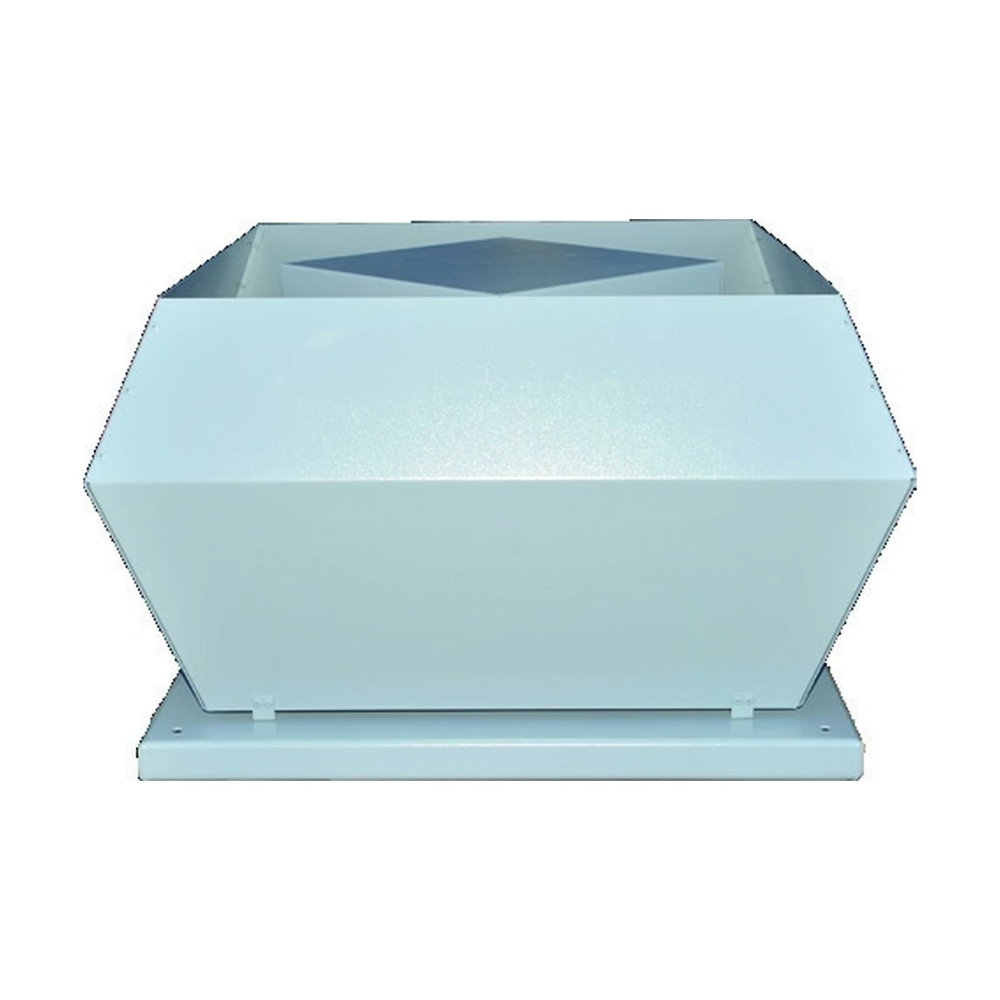

Vitlofan ürün sayfaları
19 ürün ailesi. Ortak responsive tasarım, SEO/AI yapısı ve Fan Selection veri bağlantısı.

AXD/ATEX
AXD/ATEX Kanal Tipi Exproof Fan
Aksiyal • Kanal tipi

AXD
AXD Kanal Tipi Aksiyal Fan
Aksiyal • Kanal tipi

AXF
AXF Kanal Tipi Duman Egzost Fanı
Aksiyal • Kanal tipi

AXJ
AXJ Aksiyal Jet Fan
Aksiyal • Jet fan

AXW/ATEX
AXW/ATEX Duvar Tipi Exproof Fan
Aksiyal • Duvar tipi

AXW
AXW Duvar Tipi Aksiyal Fan
Aksiyal • Duvar tipi

CRB
CRB Prizmatik Kanal Tipi Fan
Santrifüj • Kanal tipi

CRD
CRD Prizmatik Kanal Tipi Fan
Santrifüj • Kanal tipi

CRD/ATEX
CRD/ATEX Kanal Tipi Exproof Fan
Santrifüj • Kanal tipi

CRH
CRH Yatay Atışlı Çatı Tipi Fan
Santrifüj • Çatı tipi

CRH/ATEX
CRH/ATEX Radyal Çatı Tipi Exproof Fan
Santrifüj • Çatı tipi

CRK
CRK Hücreli Fan
Santrifüj • Hücreli

CRK/ATEX
CRK/ATEX Hücreli Exproof Fan
Santrifüj • Hücreli

CRS
CRS Salyangoz Tipi Fan
Santrifüj • Salyangoz

CRS/ATEX
CRS/ATEX Salyangoz Tipi Exproof Fan
Santrifüj • Salyangoz

CRU
CRU Dikey Atışlı Çatı Tipi Fan
Santrifüj • Çatı tipi

MOB-AXD/ATEX
MOB-AXD/ATEX Mobil Exproof Fan
Aksiyal • Mobil

RXJ
RXJ Radyal Jet Fan
Radyal • Jet fan

TUNEL-AXF
TUNEL-AXF Tünel Jet Fanı
Aksiyal • Tünel